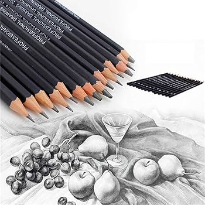
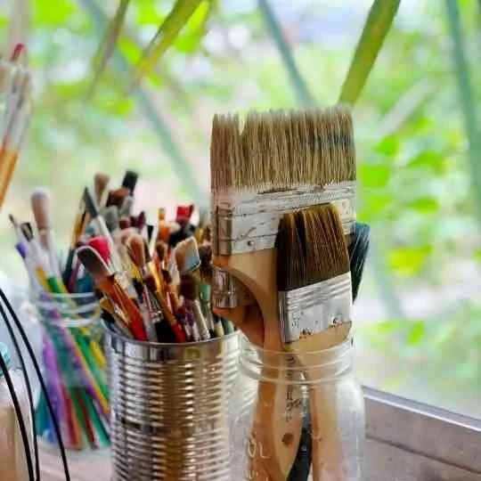
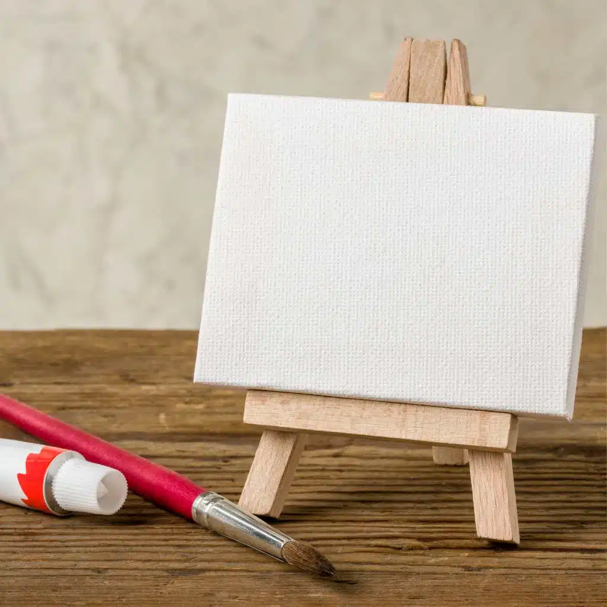
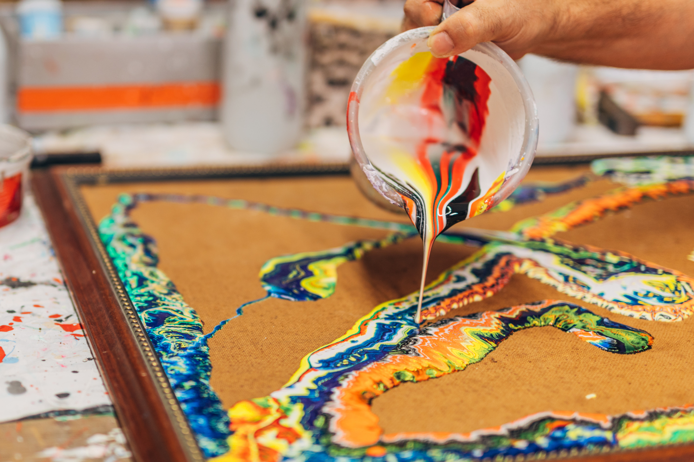
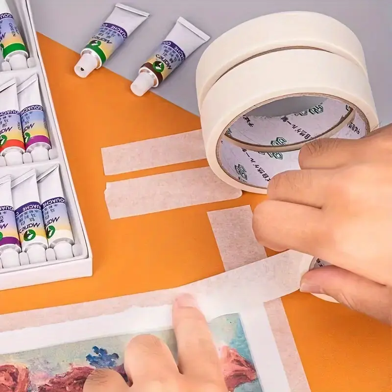
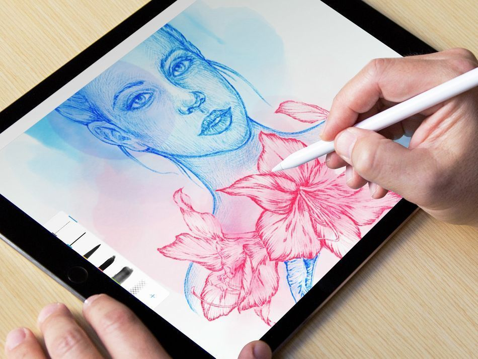
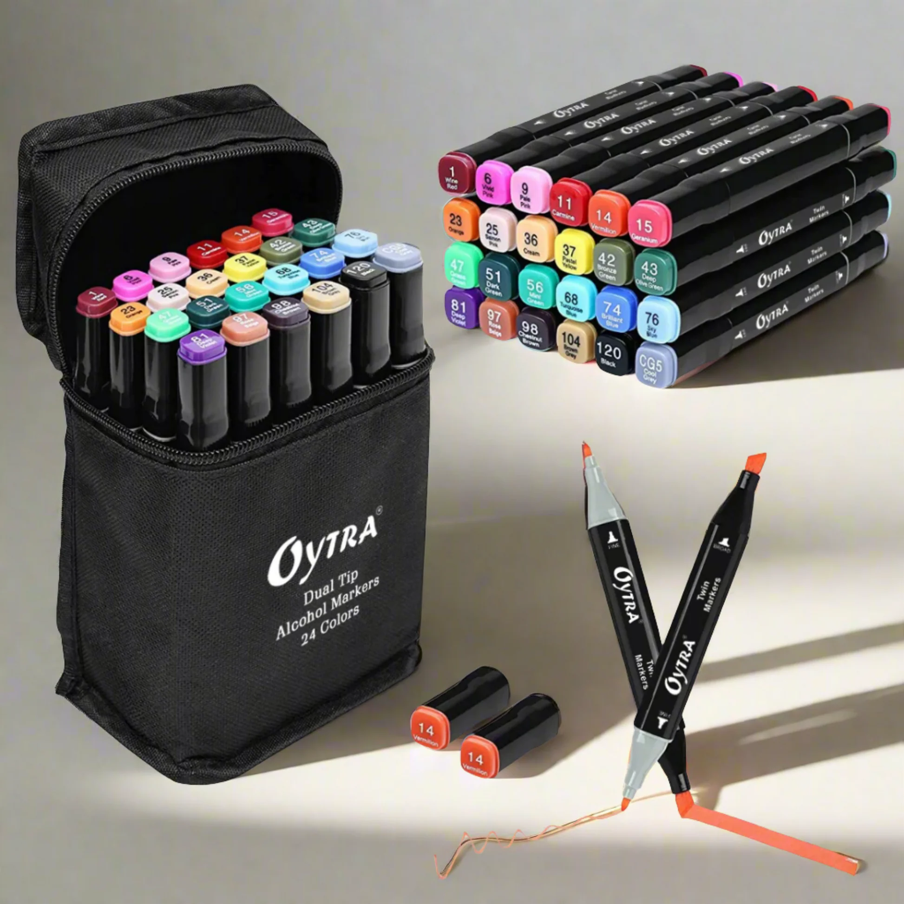

Pencils
Art pencils are classified by lead hardness and composition, ranging from hard, light-marking H pencils to soft, dark-marking B pencils, with HB in the middle. Key types include graphite for drawing, charcoal for deep black, color pencils, watercolor pencils, and mechanical pencils, each offering unique textures, tones, and blending capabilities for artists.

Brushes
Artist brushes come in varied shapes and materials suited for different techniques, primarily categorized by head shape—Round, Flat, Filbert, Bright, Fan, and Liner. Common hair types include natural (sable, hog) for oils/watercolors and synthetic for durability with acrylics.

Surfaces
Art surfaces, or supports, are foundational materials chosen for texture, absorbency, and durability. Major types include canvas (cotton or linen), wood panels (MDF, plywood), paper (hot/cold-pressed, rough), and metals (copper, aluminum).

Erasers
Essential drawing erasers include kneaded erasers for lifting and highlighting, vinyl/plastic erasers for clean, thorough erasing, and gum erasers for soft, crumbling action that protects paper.

Paint
Common types of paint used in drawing and painting include versatile, fast-drying acrylics, slow-drying oil paints for blending, and translucent watercolors. Gouache offers opaque, matte, water-based color, while casein provides a durable, matte finish. Other options include tempera (poster paint) and pastels, which bridge drawing and painting.

Tape
Types of tape used in drawing include low-tack artist's tape, specialized drafting tape, and drafting dots, all designed to hold paper without tearing it upon removal. These, along with delicate-surface painter's tape and PH-neutral,, archival options, ensure clean edges and prevent damage to delicate paper surfaces.

Tablets
Drawing tablets are categorized into three main types: pen tablets (non-screen, connected to PC), pen displays (screen, connected to PC), and standalone tablets (portable, no computer required). Popular options include Wacom (Intuos/Cintiq), Apple iPad Pro, Huion (Kamvas/Inspiroy), and Samsung Galaxy Tab, which offer varying pressure sensitivity and display quality for artists..

Markers and Pens
Drawing markers and pens are categorized by their ink base and tip type, with popular options including alcohol-based markers (Copic) for blending, water-based markers (Tombow) for illustration, and opaque paint markers (Posca) for versatility.